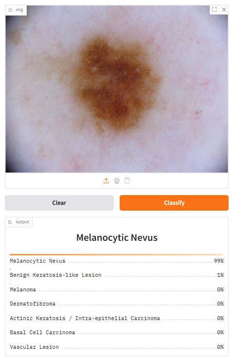

About This Project
The Skin Disease Classifier (SDC) is a deep learning-based system designed to assist with early detection of common skin diseases. It uses a convolutional neural network trained on dermatological images to classify seven conditions, including melanoma and basal cell carcinoma.
Disclaimer: This tool is intended for preliminary diagnosis only. Please consult a medical professional.
Example Classifications

Classification: Melanocytic Nevus
Confidence: 92%
Upload a Skin Lesion Image
This model will analyze an image and predict the most likely condition. Classification may take up to a few minutes.